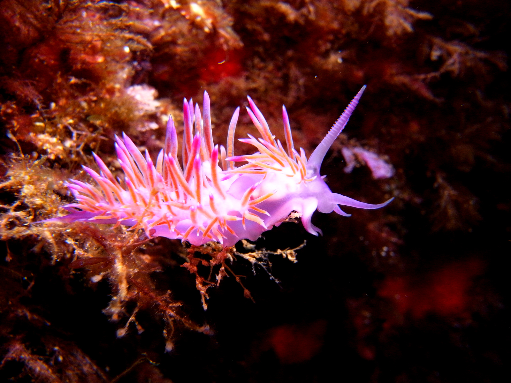
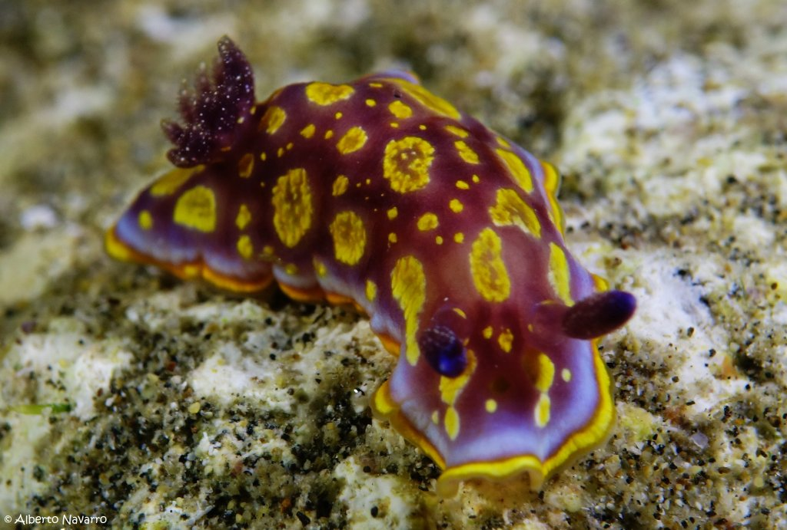
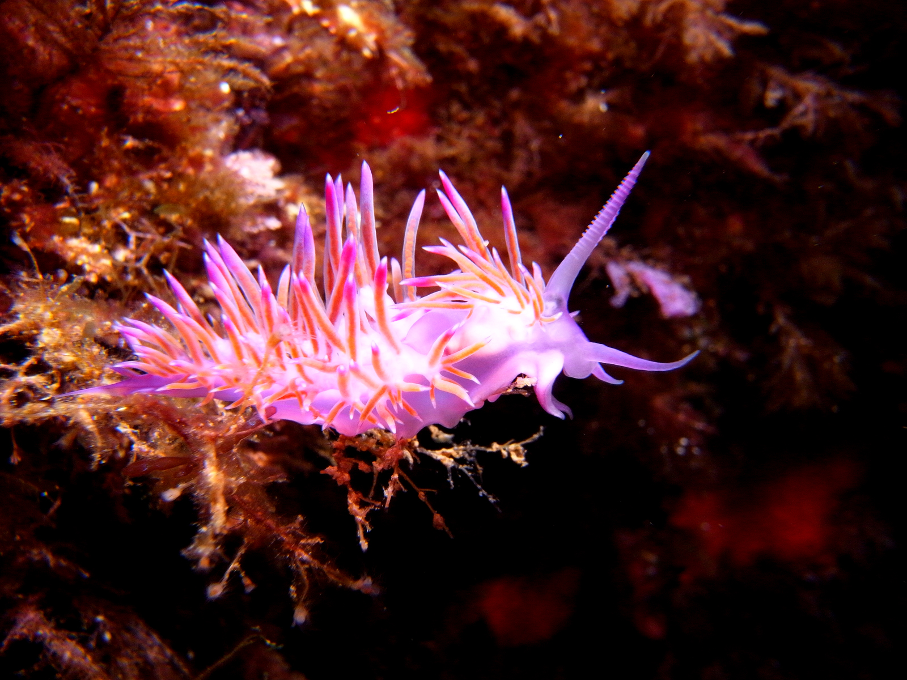
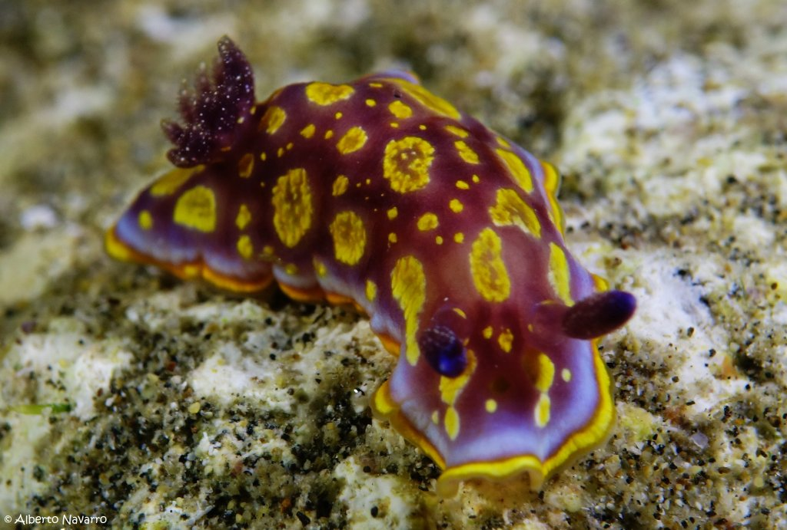

Su nombre científico es "Nudibranchia" significa «branquias desnudas» Sus colores llamativos sirven para alertar a sus depredadores de su toxicidad. Hay otros que son luminosos o miméticos pero siempre originales, la belleza es su principal defensa, la defensa de los nudibranquios se basa en el arte de la advertencia a través de sus colores. Estas sustancias químicas se sitúan principalmente en las branquias y son generados gracias a su alimentación.
☆☆☆☆☆☆☆☆☆☆☆☆☆☆ ☆☆☆☆☆☆☆☆☆☆☆☆☆
↪ Los nudibranquios son ciegos y sus ojos solo son capaces de percibir la oscuridad de la claridad.
↪ Su olfato y el gusto lo detectan a través de sus apéndices sensoriales de su cabeza.
↪ Este es muy pequeño ya que lo más habitual es que midan escasos milímetros o centímetros.

 


